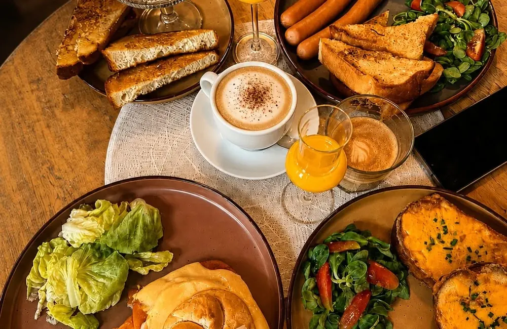
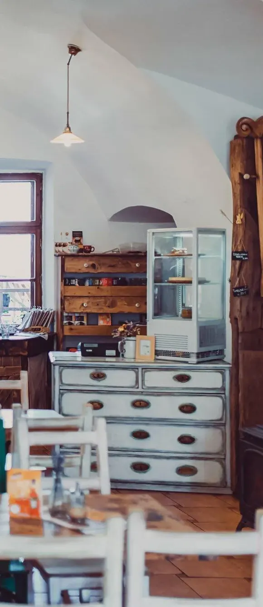
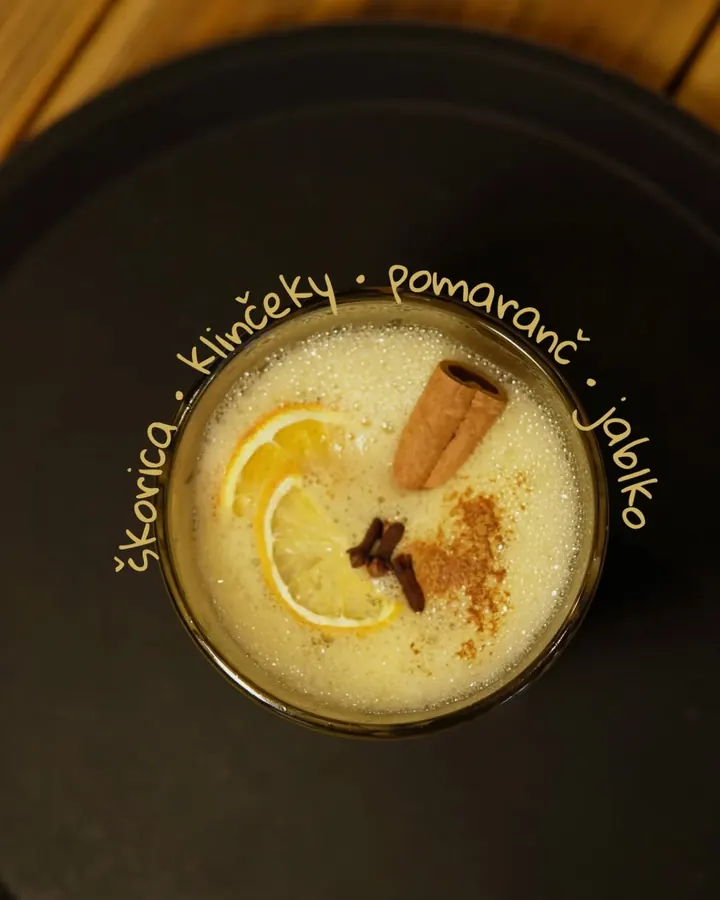

Chlieb vo vajci
- domáci raňajkový chlieb
- vajce
- syr
- horčicová mayo
6,50 €(1, 3, 7)

Slané a sladké dobroty, výborná kávička a čerstvé ovocné a zeleninové šťavy.
Otvorené pondelok – nedeľa 8:00 – 17:00podľa nášho plagátu overiť

Štyri raňajky z nového jedálneho lístka. Ceny podľa nášho plagátu (september 2026), čísla v zátvorke sú alergény.
6,50 €(1, 3, 7)
7,50 €(1, 10)
6,50 €(1, 3, 7)
8,50 €(1, 3, 7)
Nový koncept, nový jedálny lístok a nový detský kútik — takto sme to oznámili na Facebooku.
zo 3. septembra„Pred dvoma mesiacmi sme si povedali, že dobré nám jednoducho nestačí. A tak sme celý náš jedálny lístok postavili nanovo.“
„Tešíme sa na Vás!“

Kávička, šťavy a raňajky na slano aj na sladko
Hrnčiarska ulica v Košiciach — na mape nás nájdete ako Raňajkáreň Rozprávka.
Pondelok – nedeľa
8:00 – 17:00
Overiť: tak uvádza náš plagát; Google má cez týždeň 8:00 – 13:00, cez víkend 8:00 – 17:00.
A zajtra ráno ďalšia kapitola.